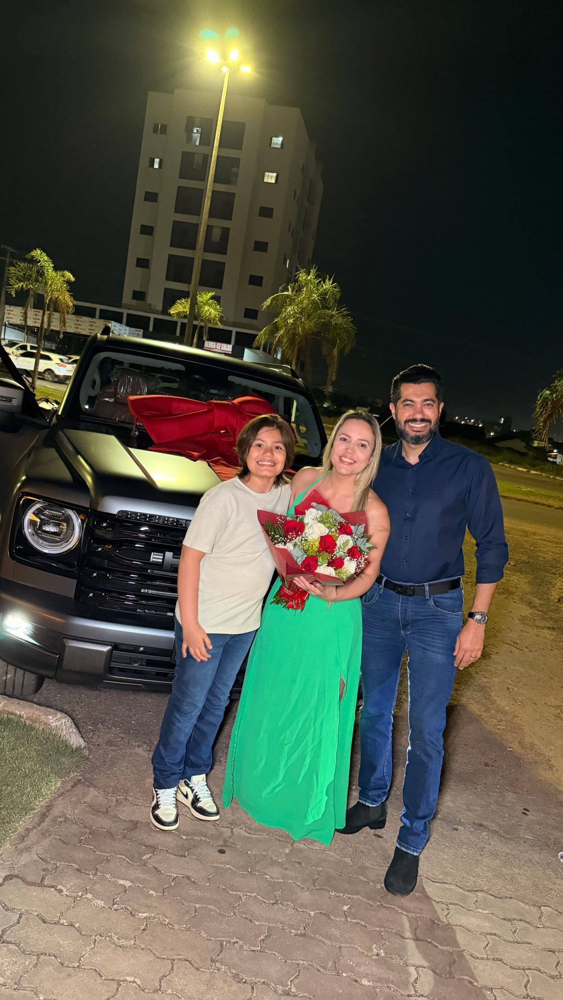
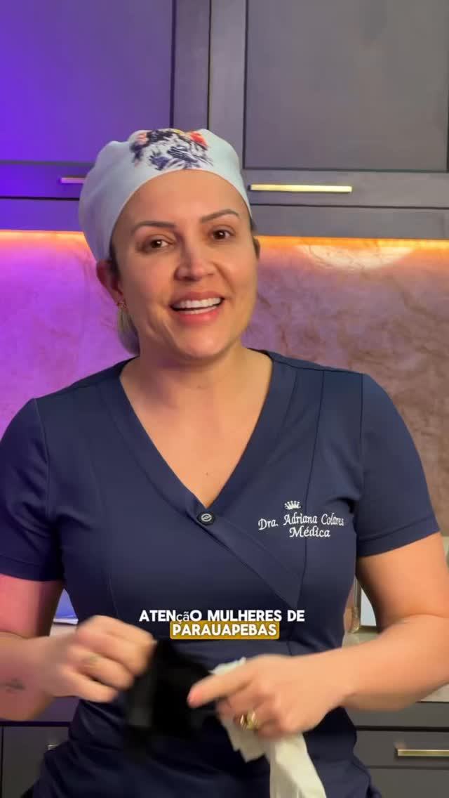
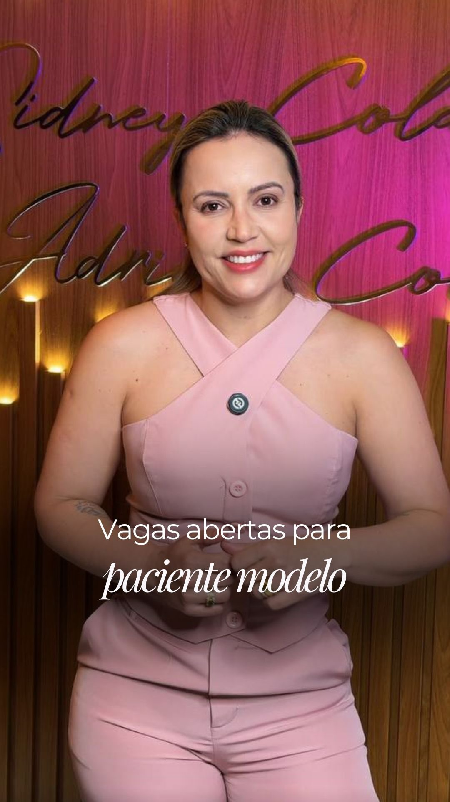
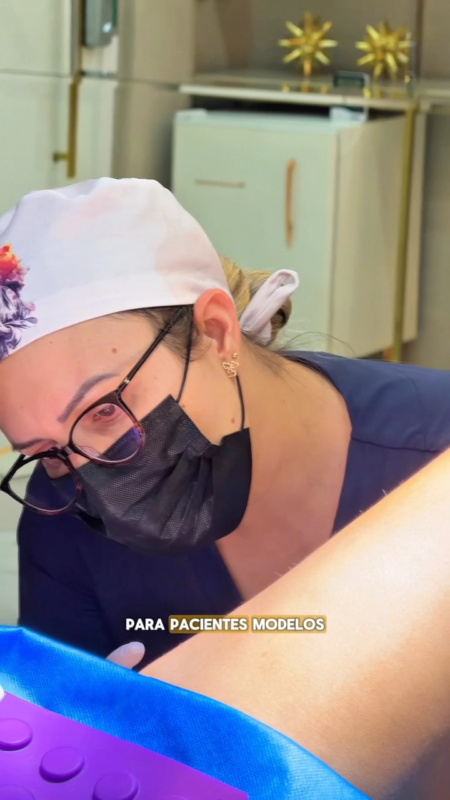
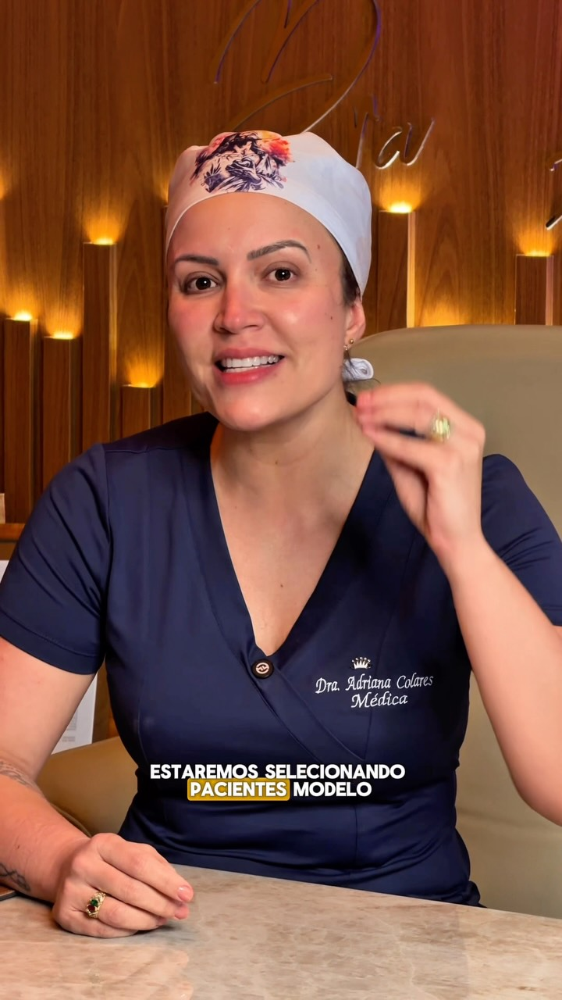
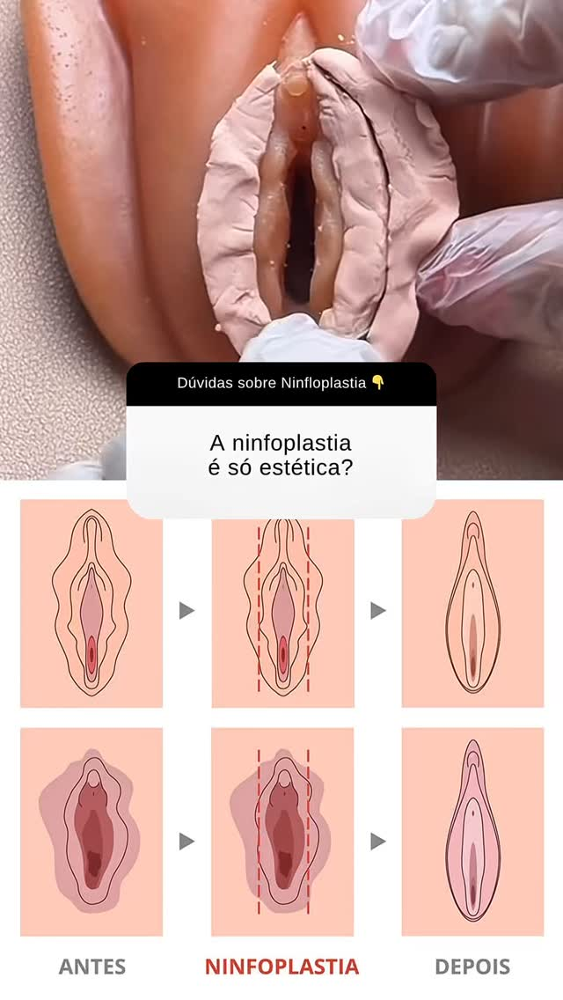

O perfil não precisa falar de tudo que a médica faz.
Precisa fazer a paciente lembrar de Adriana quando pensar em Ninfoplastia ou Minilipo.
45%Ninfoplastia
Conforto íntimo, função, privacidade e segurança para falar sem tabu.
35%Minilipo + Refinne
Contorno corporal com indicação, planejamento e expectativa real.
20%Confiança
Critério médico, resultados educativos, equipe e experiência.
Posicionamento recomendado
“Conforto íntimo e contorno corporal com indicação individual.”
O perfil em cinco segundos
Hoje existe conteúdo. Depois existe uma categoria.
O comparativo abaixo torna visível a mudança: sai a mistura de temas e entra uma jornada coerente até a avaliação.
Antes Como está hoje
dra.adrianacolares
526publicações12,4 milseguidores1.200seguindo
Dra. Adriana Colares
Dra. Adriana Colares · CRM/PA 18867 Atuação em Contorno Corporal e Emagrecimento Protocolo Refinne 👇 Agendamentos
SeguirMensagem
RefinneRotinaEventosDúvidas






Bio ainda vende o foco antigo.
Capas não formam um sistema reconhecível.
Ninfoplastia aparece, mas Minilipo quase não cria categoria.
Resultados não têm uma rota própria de prova.
Depois Como deve ficar
dra.adrianacolares
—publicações12,4 milseguidores—seguindo
Dra. Adriana | Ninfoplastia e Minilipo
CRM-PA 18867 Atuação em Ninfoplastia e Minilipo Conforto íntimo e contorno corporal Avaliações em Parauapebas ↓
Agendar avaliaçãoMensagem
ComeceNinfoMinilipoResultadosConsulta
COMECE AQUI
NINFOPLASTIASEM TABU
MINILIPO COM PLANEJAMENTO
ANTESDEPOISMINILIPO
NINFOPLASTIAQUANDO INDICAR?
ANTESDEPOISRESULTADOS
SEGURANÇA PRIMEIRO
PROTOCOLOREFINNE
PARAUAPEBASAVALIAÇÃO INDIVIDUAL
Categoria explícita no campo nome e na bio.
Dois procedimentos organizam toda a narrativa.
Resultados ocupam destaque e feed.
CTA único leva à avaliação em Parauapebas.
O que os benchmarks realmente ensinam
Não é copiar estética. É construir percepção.
01
Projeto personalizado
Gustavo Aquino transforma o procedimento em planejamento corporal. Adriana deve fazer o mesmo com a Minilipo.
02
Método percebido
Leandro Faustino organiza tecnologia como método e experiência. Refinne precisa ganhar etapas e critérios.
03
Intimidade com ciência
Igor Padovesi fala de cirurgia íntima por função, desconforto e segurança. Esse é o tom para Ninfoplastia.
O termo central dos benchmarks não é “modelação corporal”.
A categoria mais direta para Adriana é:Ninfoplastia e Minilipo
Kit de imagens da médica
Qual foto anexar em cada prompt.
Peça sempre o arquivo original, sem texto, legenda de Reel ou captura de tela. Estes quadros mostram exatamente a foto-base que o GPT deve receber.
Foto A
Retrato de autoridade
Blazer preto, rosto visível, olhar direto. Usar no avatar e no “Comece aqui”.
Enviar a versão original desta foto.
Foto B
Acolhimento frontal
Roupa rosa, postura aberta, ambiente da clínica. Usar em Ninfoplastia e consulta.
Enviar o frame original, sem textos.
Foto C
Educação médica
Jaleco ou roupa branca, gesto explicativo. Usar em dúvidas, critérios e segurança.
Preferir nova foto sem ilustração nas mãos.
Foto D
Bastidor técnico
Scrub, preparação e ambiente clínico. Usar em processo, equipe e acompanhamento.
Sem mostrar ato médico ou identificar paciente.
ANTESDEPOIS
Fotos E + F
Resultado real autorizado
Mesmo ângulo, luz, distância e postura. Uma dupla para Minilipo e uma para Ninfoplastia.
Não retocar nem gerar resultado com IA.
Arquitetura dos destaques
A prova precisa de um endereço.
“Resultados” vira destaque próprio, enquanto Ninfo e Minilipo também carregam casos relevantes dentro de suas jornadas.
Comecequem é + dois focos
Ninfodor + indicação + caso
Minilipocritério + processo + casos
Resultadosprova organizada
Refinnemétodo + etapas
Dúvidasobjeções reais
Consultacomo agendar
Camada 1
Destaque “Resultados”
Índice de transformações dividido entre Ninfoplastia e Minilipo, sempre com contexto educativo.
Camada 2
Dentro de cada oferta
O destaque Ninfo recebe um caso completo. Minilipo recebe dois ou três casos de perfis diferentes.
Camada 3
Feed e Reels
Um caso por semana alternando transformação, planejamento, evolução e limite clínico.
O motor de conversão
Antes e depois não é decoração. É uma história.
A imagem chama atenção; o contexto transforma curiosidade em confiança.
Caso educativo · Minilipo
Contorno abdominal com planejamento individual
Queixa
Gordura localizada e perda de definição no abdômen inferior.
Indicação
Definida após avaliação de pele, gordura, flacidez, histórico e expectativa.
Evolução
Registrar tempo do pós, cuidados, fatores individuais e inserir o caso em um conjunto com evoluções satisfatórias, insatisfatórias e possíveis complicações.
Inserir foto real autorizada
Antes
Inserir foto real autorizada
Depois · informar o tempo
Minilipo · vista frontal
Foto
Antes
Foto
Depois
Legenda: indicação, biotipo, tempo de evolução, limitações e variação individual.
Minilipo · vista lateral
Foto
Antes
Foto
Depois
Mesmas condições de fotografia. Nenhum filtro, retoque corporal ou promessa.
Ninfoplastia · conteúdo sensível
Imagem protegidaPublicar com máxima privacidade e pudor.
A capa pública apresenta a história; a imagem clínica entra depois, com anonimato e contexto.
Regra editorial: não transformar um único resultado satisfatório em promessa. O banco de casos deve representar diferentes indicações, biotipos, tempos de evolução, respostas insatisfatórias e possíveis complicações.
Primeira grade recomendada
Nove posts para instalar o novo posicionamento.
Os três primeiros ficam fixados. Três peças usam resultado como prova direta, sem abandonar educação e segurança.
COMECE AQUI
NINFOPLASTIASEM TABU
MINILIPO COM PLANEJAMENTO
ANTESDEPOISMINILIPO
NINFOPLASTIAQUANDO INDICAR?
ANTESDEPOISRESULTADOS REAIS
SEGURANÇA PRIMEIRO
PROTOCOLOREFINNE
PARAUAPEBASAVALIAÇÃO INDIVIDUAL
1
Apresentar
Quem é Adriana, Ninfoplastia e Minilipo.
2
Educar
Indicação, limite, recuperação e segurança.
3
Provar
Resultados, evolução e experiência real.
4
Converter
Um próximo passo: avaliação em Parauapebas.
Biblioteca de produção
Prompts prontos. Foto certa. Texto exato.
Use GPT Image em modo de edição. Cada peça abaixo indica o arquivo a anexar; o prompt completo pode ser copiado com um clique.
01 · PerfilAnexar Foto A
Novo retrato de perfil
Transforma o retrato atual em um avatar mais legível sem mudar a identidade.
Edite a imagem anexada da Dra. Adriana Colares para criar um retrato profissional de perfil médico para Instagram. Preserve rigorosamente a identidade, os traços faciais, o tom e a textura natural da pele, a cor e o formato do cabelo, a expressão e a roupa preta. Reenquadre em cabeça e ombros, com o rosto ocupando aproximadamente 65% da imagem. Troque apenas o fundo por um cinza muito claro neutro e aplique luz frontal suave e realista. Aparência médica contemporânea, firme e acolhedora. Sem jaleco, sem acessórios novos, sem texto, sem logotipo, sem filtro de beleza, sem afinar rosto e sem modificar o corpo. Composição 1:1, alta resolução.
02 · Post fixadoAnexar Foto A
Comece aqui
Capa-manifesto que apresenta a médica e as duas categorias.
Crie uma capa editorial premium para Instagram usando a foto anexada da Dra. Adriana. Preserve integralmente sua identidade, rosto, pele, cabelo, expressão e proporções. Recorte a médica do peito para cima e componha em fundo off-white limpo, com tipografia sans serif forte em carvão e um único detalhe gráfico em laranja queimado. Inserir exatamente o texto “COMECE AQUI” e, abaixo, “Ninfoplastia + Minilipo”. Hierarquia clara, poucos elementos, autoridade médica e acolhimento. Não adicionar símbolos anatômicos, equipamentos, selos, logotipos, sombras, gradientes, texto extra ou marca-d'água. Formato vertical 4:5, 1024x1280.
03 · Post fixadoAnexar Foto B
Ninfoplastia sem tabu
Acolhimento e privacidade antes da explicação clínica.
Crie uma capa editorial de Instagram usando a foto anexada da Dra. Adriana no consultório. Preserve rigorosamente sua identidade, rosto, pele, cabelo, roupa rosa, expressão e proporções. Mantenha a médica como elemento principal, com enquadramento frontal e espaço limpo para título. Fundo off-white e carvão, com um pequeno detalhe em laranja queimado. Inserir exatamente o texto “NINFOPLASTIA SEM TABU” e o apoio “Conforto, função e privacidade”. Visual médico, feminino, discreto e contemporâneo. Não mostrar anatomia íntima, não sexualizar, não adicionar paciente, não criar símbolos florais, não usar gradiente, sombra, logotipo, texto extra ou marca-d'água. Formato vertical 4:5, 1024x1280.
04 · Post fixadoAnexar Foto C
Minilipo com planejamento
Posiciona o procedimento como projeto individual, não como atalho.
Crie uma capa editorial premium para Instagram usando a foto anexada da Dra. Adriana em postura educativa. Preserve identidade, rosto, pele, cabelo, expressão e proporções. Remova apenas elementos gráficos ou cartões que estejam nas mãos, reconstruindo naturalmente as mãos sem alterar a pose. Use fundo carvão sólido com áreas off-white e um pequeno detalhe laranja queimado. Inserir exatamente o texto “MINILIPO COM PLANEJAMENTO” e o apoio “Indicação individual em Parauapebas”. Visual preciso, médico e sofisticado. Não criar corpo de paciente, silhueta irreal, resultado corporal, logotipo, selo, gradiente, sombra, texto extra ou marca-d'água. Formato vertical 4:5, 1024x1280.
05 · AutoridadeAnexar Foto D
Segurança primeiro
Usa o bastidor para revelar processo e critério médico.
Crie uma capa editorial para Instagram usando a foto anexada da Dra. Adriana em ambiente clínico. Preserve a cena real, a identidade da médica, o scrub, os equipamentos e a iluminação natural. Faça apenas correção de enquadramento e cor, sem reconstruir o ato médico. Garanta que nenhuma paciente seja identificável. Inserir exatamente o texto “SEGURANÇA PRIMEIRO” e o apoio “O que eu avalio antes de indicar”. Tipografia sans serif legível em off-white, com detalhe laranja queimado sobre área carvão sólida. Não mostrar procedimento explícito, sangue, anatomia íntima, promessa de resultado, logotipo, gradiente, sombra, texto extra ou marca-d'água. Formato vertical 4:5, 1024x1280.
06 · EducativoAnexar Foto B
Minilipo: para quem?
Qualifica a paciente e combate expectativa errada.
Crie uma capa limpa para carrossel de Instagram usando a foto anexada da Dra. Adriana. Preserve totalmente identidade, rosto, pele, cabelo, roupa, expressão e proporções. Posicione a médica em um dos terços e mantenha grande área livre para texto. Fundo off-white, tipografia carvão e um detalhe laranja queimado. Inserir exatamente “MINILIPO: PARA QUEM?” e o apoio “Indicação começa na avaliação”. Visual médico, humano, sóbrio e de alta legibilidade. Não adicionar corpo de paciente, fita métrica, balança, promessa, resultado artificial, logotipo, gradiente, sombra, texto extra ou marca-d'água. Formato vertical 4:5, 1024x1280.
07 · Resultado MinilipoSem fotos de paciente no GPT
Template de antes e depois
O GPT cria a moldura; as imagens reais entram manualmente, sem alteração.
Crie um template editorial vazio para um post médico de antes e depois de Minilipo. Não gerar corpos, pacientes ou resultados. Use fundo off-white, tipografia carvão e um único detalhe laranja queimado. Crie dois espaços fotográficos verticais idênticos, lado a lado, com as legendas exatas “ANTES” e “DEPOIS”. Inserir o título exato “MINILIPO: CASO EDUCATIVO” e reservar uma faixa inferior limpa para: “Indicação, tempo de evolução e fatores individuais na legenda.” Design sóbrio, médico e legível, sem promessa, selos, logotipo, gradiente, sombra, imagem sintética, texto extra ou marca-d'água. Formato vertical 4:5, 1024x1280. As fotos reais serão inseridas depois, sem qualquer retoque.
08 · Resultado NinfoplastiaSem imagem íntima no GPT
Template clínico com privacidade
Capa pública discreta; material clínico protegido no interior do carrossel.
Crie um template editorial vazio e discreto para carrossel médico sobre um caso educativo de Ninfoplastia. Não gerar anatomia, corpos, pacientes ou resultados. Fundo off-white, tipografia carvão e um pequeno detalhe laranja queimado. Na capa, inserir exatamente “NINFOPLASTIA: CASO EDUCATIVO” e o apoio “Conforto, função e evolução individual”. Na segunda página, criar dois espaços clínicos idênticos e vazios com as legendas “ANTES” e “DEPOIS”, mais uma área de contexto para indicação, evolução, limitações e possíveis complicações. Visual médico, sóbrio, respeitoso e sem sexualização. Não adicionar flores, símbolos vagos, logotipo, gradiente, sombra, texto extra ou marca-d'água. Formato vertical 4:5, 1024x1280. As imagens reais serão inseridas manualmente com autorização e anonimato.
Campo nome, bio, avatar, botão e duas rotas de WhatsApp.
02
Publicar os três fixados
Comece aqui, Ninfoplastia sem tabu e Minilipo com planejamento.
03
Instalar os destaques
Comece, Ninfo, Minilipo, Resultados, Refinne, Dúvidas e Consulta.
04
Organizar o banco de casos
Separar autorização, tipo de procedimento, ângulo, tempo de evolução e contexto clínico.
05
Rodar a grade inicial
Nove peças com categoria, educação, prova e convite para avaliação.
Entregáveis imediatos1 bio · 7 destaques · 3 fixados · 9 capas · 8 prompts · 1 sistema de resultados
Regra inegociável
Prova forte. Publicidade responsável.
Autorização
Uso formalmente autorizado, com possibilidade de retirada.
Anonimato
Nenhuma identificação, inclusive com autorização.
Imagem real
Sem filtro, melhoria, retoque corporal ou resultado gerado por IA.
Contexto educativo
Indicação, fatores, evoluções, limitações e possíveis complicações.
A Resolução CFM nº 2.336/2023 permite demonstrações de antes e depois com finalidade educativa e critérios específicos. A execução final deve ser validada pela responsável técnica e, quando necessário, pela CODAME/CRM-PA.
A percepção que queremos instalar“Em Parauapebas, Adriana é a médica que eu procuro para conversar sobre Ninfoplastia ou Minilipo com privacidade, critério e segurança.”